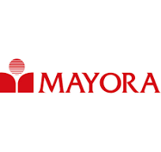

LokaJob
Username
🔔
Company
Temukan Company terbaik yang membuka lowongan kerja

← Kembali ke halaman sebelumnya
PT Mayora Indah Tbk (MYOR)
Dikenal sebagai salah satu produsen makanan dan minuman terbesar di Indonesia, PT Mayora Indah Tbk memproduksi berbagai merek populer seperti Kopiko, Torabika, Roma, Energen, Beng-Beng, dan Le Minerale. Perusahaan ini berkomitmen menghadirkan produk berkualitas tinggi yang inovatif, lezat, dan memenuhi standar internasional. Dengan pengalaman lebih dari 45 tahun dan distribusi ke lebih dari 90 negara, Mayora telah menjadi pelopor industri FMCG yang tak hanya unggul di pasar domestik, tetapi juga di panggung global. Fokus utama perusahaan adalah kepuasan pelanggan, inovasi produk, dan kesinambungan bisnis.
- 📍 Lokasi: Jakarta, Indonesia
- 🏛️ Tahun Berdiri: 1977
- 👥 Jumlah Karyawan: 10.000+
- 🧺 Industri: Makanan & Minuman
- 🌐 Website: www.sariroti.com
Lowongan yang Tersedia
- • Staff Produksi
- • Quality Control
- • Sales Marketing
- • Teknisi Maintenance
- • R&D (Research & Development)